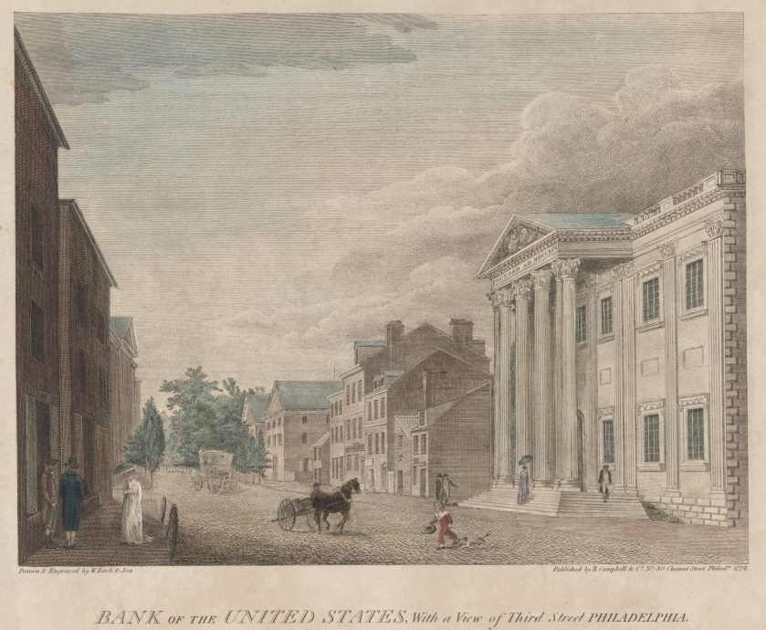

Marbury v. Madison- Background
In the final days of John Adams' presidency (1801), he appointed severeal Federalist judges that were unable to receive their proper commissions after Adams left office. One of those judges was William Marbury; upon Thomas Jefferson being sworn into office, Jefferson refused to give Marbury his commission.
Marbury v. Madison- Ruling
William Marbury, one of Adams' appointees, had been nominated as a justice of the peace for the District of Columbia but did not receive his official commission before the end of Adams' term. When Jefferson took office, his Secretary of State, James Madison, refused to deliver Marbury's commission.Marbury petitioned the Supreme Court, seeking a writ of mandamus, which would compel Madison to deliver his commission. Chief Justice John Marshall, writing for the Court, ruled that while Marbury was entitled to his commission, the Court did not have the authority under the Judiciary Act of 1789 to issue a writ of mandamus in this case.

Marbury v. Madison- Significance
Marbury v. Madison set the precedent for judicial review, affirming the Supreme Court's authority to review the constitutionality of laws passed by Congress. It strengthened the balance of power among the branches of government by establishing the judiciary's role as a check on legislative and executive actions that exceed constitutional bounds. The decision solidified the Court's status as the final arbiter of the Constitution's meaning. Chief Justice Marshall asserted that it was the duty of the judiciary to interpret the Constitution and that any law conflicting with the Constitution is invalid. This landmark ruling solidified the Court's authority in interpreting the Constitution and set the precedent for the concept of judicial review, which remains a fundamental principle of American constitutional law.
McCulloch v. Maryland- Background
The case of McCulloch v. Maryland is a landmark United States Supreme Court case that took place in 1819. It involved a dispute over the constitutionality of the Second Bank of the United States and the state of Maryland's attempt to tax it. The Second Bank of the United States was established by the federal government to manage fiscal transactions and regulate the currency. Maryland, seeking to protect its own state-chartered banks, passed a law imposing a tax on all banks not chartered within the state. James McCulloch, an official at the Baltimore branch of the Second Bank, refused to pay the tax imposed by Maryland. The case made its way to the Supreme Court, where the primary issue was whether Congress had the authority, under the Constitution's Necessary and Proper Clause (Article I, Section 8), to establish a national bank and whether a state had the power to tax an institution created by the federal government.
McCulloch v. Maryland- Ruling
The Court, in a unanimous decision written by Chief Justice John Marshall, ruled that Congress did indeed have the authority to establish the bank under the Necessary and Proper Clause. Marshall argued that the Constitution's necessary and proper clause gave Congress the power to take actions that were deemed appropriate and necessary to execute its enumerated powers. Furthermore, the Court held that the state of Maryland could not tax the bank because the power to tax involves the power to destroy, and if states could tax federal institutions, they could potentially undermine federal supremacy.
McCulloch v. Maryland- Significance
The decision in McCulloch v. Maryland established important principles regarding federal power, asserting the supremacy of federal laws over state laws in matters concerning the Constitution. It also broadened Congress's implied powers under the Necessary and Proper Clause, solidifying the federal government's authority to take actions not explicitly mentioned in the Constitution but deemed essential to fulfill its enumerated powers.